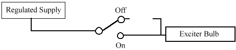
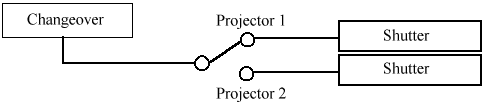

Chapter 2:
Literature Review
2.1 Introduction to Motion Picture Projection
Modern-day motion picture projection dates back to the early 20th century. Projectors back then used carbon-arcs as a light source. Since carbon-arcs only lasted 20 minutes at the most, projectionists were forced to changeover every 20 minutes during a film. Today, xenon arc lamps are used, which last thousands of hours as opposed to just 20 minutes.
Film in the early 20th century was nitrate-based, which is highly flammable. Due to many fires in projection booths, nitrate film is forbidden by law in most projection facilities across the nation. A new film, called "safety film," must now be used. Safety film is composed of polyester and other non-flammable plastics which will melt, but rarely burn.
2.2 Projector Setups
There are two types of motion picture projector setups commonly in use in theaters. A platter system utilizes only one projector while a changeover setup uses two projectors. WPI currently has a changeover system.
2.2.1 Changeover System
If a motion picture projection booth is equipped with two projectors and no platter system, the projectionist must switch between each projector after every 20 or 40 minute reel during the showing of a film. This time limit is most often caused by size and weight restrictions on the projector. The radius of the spindle arm and strength of the arm can be severely limited by the size of the room or the material from which the projector was manufactured. Ten minutes of film is approximately 1000 feet long and weighs almost 6½ pounds.
Just before the show starts, the first reel is loaded onto one projector and the second reel is loaded onto the other. Loading a reel of film onto a projector involves threading the film through various pads, rollers, and sprockets. Once the film is loaded, it is ready to be shown. When the end of a reel being shown is approaching, the projectionist stands next to the second projector looking out at the screen, waiting for the first cue mark. A cue mark is a small black dot or white circle in the upper-right-hand corner of the picture for four consecutive frames (which amounts to 1/6th of a second). Upon seeing the first cue mark, the projectionist presses the motor start button on the second projector, making sure the arc lamp is on.
The projectionist should have timed the second machine's run-up (the time that it takes for the motor to get up to speed), and has positioned the film leader accordingly. Usually, about three seconds of time are lost in the run-up. Once the second projector is going, the projectionist waits for the second cue, located 22 frames from the end of the first reel. Within a half-second or so after seeing this, the projectionist hits a button which switches over the soundtrack, and simultaneously opens (on the machine holding the second reel) and closes (on the machine holding the first reel) the shutter. This process is repeated for every reel change.
If the changeover is performed correctly, it goes unnoticed by the average moviegoer. In fact, the average moviegoer doesn't even notice the cue marks every 20 minutes during the show! When a projectionist messes up a changeover, there may be an abnormal period of blackness or garbage may clutter the screen accompanied by pops in the sound system.
2.2.2 Platter System
Platter systems are used commonly in fully automated booths, allowing one projectionist to run several shows (such as in a multi-screen theater) simultaneously by eliminating the need for manual changeovers and the rewinding of reels. The platter itself is a large, flat, circular, metal table mounted on a column of like plates. The film is wound, tails out, with the shipping reels all spliced together. Platters are usually installed in stacks of three, allowing two films to be ready to run at any one time, along with a take-up platter for either. This setup also allows one print to be made up/broken down while another is running.
2.2.3 Platter Operation
After the print is spliced together the projectionist removes the metal core, around which the film is wound, from the center of the platter and loads the film across a series of rollers and through the projector. The removed metal core is attached to an empty platter, allowing the film to be wound and ready for the next showing. The film feeds out the center of the first platter, and is taken up on the second one. In this way, a show may be started, and as long as no problems occur, run through its end without continual supervision. Because the film is taken up with the head at the center of the platter, there is no rewinding necessary. To run the same film again, the film is fed from its current platter onto another empty one. This can potentially save time by eliminating the rewind stage, allowing the same show to be run almost continuously.
2.3 Elements of Projection
Numerous separate systems are tied together to project a motion picture. While it may be obvious that a projector is needed, a projectionist also requires a lamp house, a rectifier for the lamp, exciter lamps, and a complete sound system. Projection at WPI incorporates all of these systems without a method for monitoring all systems in a quick and easy fashion. At movie theaters such as Showcase Cinemas, the projectionist is able to make use of an emergency notification system which alerts the projectionist to any problems which may occur during a showing. Each of the above systems should be monitored during projection.
Beginning with the lamp (arc) house and the rectifier, a projectionist should be aware of the current coming out of the rectifier and going through the bulb. This would allow a projectionist to better diagnose a problem such as bulb flicker. The exciter lamps in a projector provide the light for the photo cell which reads the optical soundtrack from the film as it passes through the projector. If the voltage across the bulb is not carefully calibrated, the audio may sound distorted or there may not be any sound at all. Also, to conserve bulb life, the exciter lamp should be dimmer (but not turned off) between reels. The sound system should also be monitored to determine which projector the sound is being read from, what format the sound is in (Dolby Surround, Mono, Stereo, etc.), and where the sound is being sent (to the auditorium, the booth, or both) (Boston Light and Sound, 1997).
During a movie in a theater using a changeover system, the projectionist must switch between two projectors every 40 minutes. Performing a changeover involves changing which projector the sound is read from, opening and closing the shutter, and opening and closing the dowser. Figure 2.3.1 below shows how the changeover switch controls the shutters on each projector. When the switch is closed, the shutter is open, and vice versa. Given the setup shown in Figure 2.3.1, only one shutter may be open at a time. A similar setup is present for reading the sound off the film. Only one projector may be providing the sound at any given time. To conserve exciter bulb life, the exciters are not turned off between reels due to the amount of bulb life lost during each power-up of the bulb. Implementing a dimming system during changeovers for the exciter bulbs would greatly increase bulb life and decrease the heat output of the bulb (which can melt the film).

Figure 2.3.1 - Exciter lamp control relay

Figure 2.3.2 - Shutter control relay
Figure 2.3.2 above shows how the regulated exciter lamp supply is used to power the exciter bulb. The switch in the figure represents the changeover switch. When the projector is off (thus the changeover switch is in the off position), the bulb is dimmer by a resistive circuit. While this may seem like a simple task, any voltage drop across the switch must be taken into account due to the precise voltage required by the exciter lamp. Therefore, the regulated supply must be adjusted to compensate. A system which would allow full control over the exciter lamps is desired (both on, both off, both dimmed, or any combination of the three).